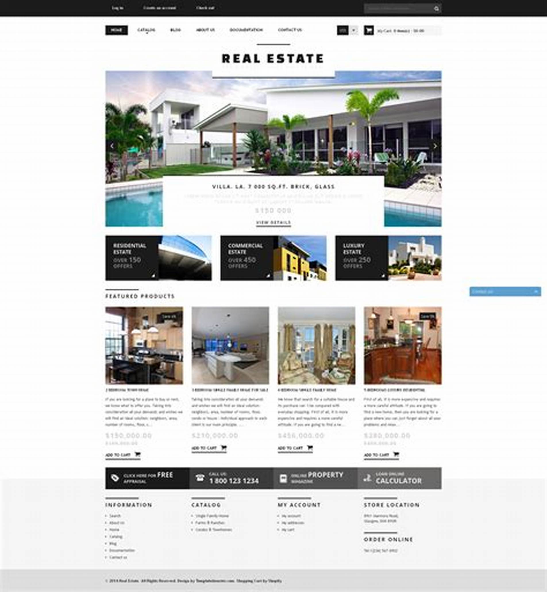
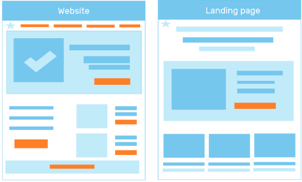

المقدمة
في عصر الإنترنت، يعدّ التواجد الرقمي من أهم العوامل لنجاح الأعمال، سواء كانت كبيرة أو صغيرة...
ما هو الموقع الإلكتروني؟
الموقع الإلكتروني هو مجموعة من الصفحات المترابطة التي تعمل معًا لتقديم معلومات متنوعة حول الشركة أو الشخص أو الخدمة. يتميز الموقع الإلكتروني بتعدد الصفحات والمحتوى، حيث يمكن أن يحتوي على صفحات مثل: الصفحة الرئيسية: تقدم نظرة عامة عن الموقع. صفحة من نحن: تعرض معلومات عن الشركة أو المؤسسة. صفحة الخدمات: تفصّل الخدمات التي يتم تقديمها. المدونة: لمشاركة المحتوى المفيد والتفاعل مع الجمهور. صفحة التواصل: تحتوي على معلومات الاتصال. صورة مقترحة: صورة لموقع إلكتروني يعرض صفحة رئيسية وصفحات فرعية (مثل: "من نحن"، "الخدمات"). أهم ما يميز الموقع الإلكتروني: تعدد الأهداف: يمكن أن يخدم الموقع عدة أغراض، من تقديم المعلومات إلى التواصل مع العملاء وعرض المنتجات. سهولة التنقل: يتوفر به شريط للتنقل بين الصفحات المختلفة. التفاعل المتعدد: يتيح للزوار استكشاف الموقع بحرية وتحديد الصفحات التي يرغبون في الاطلاع عليها. متى يُفضل استخدام الموقع الإلكتروني؟ يُنصح بإنشاء موقع إلكتروني عندما يكون الهدف هو عرض معلومات متعددة عن الشركة أو تقديم خدمات متنوعة. يساعد الموقع الإلكتروني في بناء صورة شاملة للعمل، وجذب العملاء، وتعزيز العلامة التجارية.
ما هي صفحة الهبوط؟
صفحة الهبوط هي صفحة ويب مخصصة وتهدف إلى تحقيق هدف واحد ومحدد، غالباً ما تكون مرتبطة بحملة تسويقية أو إعلانية. على عكس الموقع الإلكتروني، تركز صفحة الهبوط على توجيه الزائر إلى اتخاذ إجراء محدد. صورة مقترحة: صورة بسيطة لصفحة هبوط تحتوي على عنوان كبير ونصوص توجيهية وزر CTA واضح. أهم ما يميز صفحة الهبوط: التركيز على التحويل: تستخدم صفحة الهبوط CTA (الدعوة لاتخاذ إجراء) موجه، مثل: "سجل الآن"، "احصل على عرض"، "اشترك". بساطة التصميم: غالباً ما تكون صفحة الهبوط خالية من تشتيت العناصر مثل الروابط الخارجية أو القوائم. هدف محدد: كل العناصر في الصفحة تتوجه نحو هدف واحد، مثل تسجيل العملاء المحتملين أو دفعهم للشراء. متى يُفضل استخدام صفحة الهبوط؟ تعتبر صفحة الهبوط مثالية عندما يكون الهدف هو تحويل الزوار إلى عملاء أو الحصول على بياناتهم من خلال الاشتراك. كما تُستخدم بكثرة في حملات التسويق الرقمي المدفوعة أو عند تقديم عروض خاصة.
الفرق بين الموقع الإلكتروني وصفحة الهبوط
| المعيار | الموقع الإلكتروني | صفحة الهبوط |
|---|---|---|
| عدد الصفحات | متعدد الصفحات | صفحة واحدة |
| الهدف | تقديم معلومات شاملة | تحقيق هدف محدد |
الخاتمة
باختصار، الموقع الإلكتروني وصفحة الهبوط هما أداتان رقميتان تخدمان أهدافًا مختلفة...